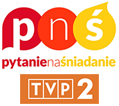
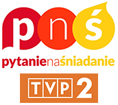

Biografia
Prof. dr hab. inż. Tomasz Trzciński, prof. PW kieruje pracami zespołu zajmującego się widzeniem maszynowym CVLab. Kieruje pracami grupy widzenia maszynowego w IDEAS NCBR, polskim centrum badawczym w obszarze sztucznej inteligencji. Tytuł naukowy profesora uzyskał w lipcu 2024 r., stopień doktora habilitowanego w 2020 r., doktora w zakresie wizji maszynowej na École Polytechnique Fédérale de Lausanne w 2014 r., a podwójny dyplom magisterski na Universitat Politècnica de Catalunya oraz Politecnico di Torino. W latach 2020-2023 był również członkiem zespołu uczenia maszynowego GMUM na Uniwersytecie Jagiellońskim. Odbył staże naukowe na Uniwersytecie Stanforda w 2017 r. oraz na Nanyang Technological University w 2019 r. Jest recenzentem prac publikowanych w czasopismach TPAMI, IJCV, CVIU, TIP i TMM, oraz członkiem komitetów organizacyjnych konferencji, m.in. CVPR, ICCV i ICML. Pracował w Google w 2013 r., Qualcomm w 2012 r. oraz w Telefónice w 2010 r. Pełni funkcję Senior Member w IEEE, jest członkiem ELLIS Society i dyrektorem jej warszawskiego oddziału, oraz członkiem ALICE Collaboration w CERN, jest ekspertem Narodowego Centrum Nauki i Fundacji na rzecz Nauki Polskiej. Jest współwłaścicielem oraz Chief Scientist w Tooploox, a także współzałożycielem startupu technologicznego Comixify, wykorzystującego metody sztucznej inteligencji do edycji wideo.
Zainteresowania naukowe: widzenie maszynowe (symultaniczna lokalizacja i mapowanie, wyszukiwanie wizualne), wydajne uczenie maszynowe (głębokie sieci neuronowe, modele generatywne, uczenie ciągłe, warunkowanie obliczeń), uczenie reprezentacji (deskryptory binarne).
Kontakt
adres: ul. Nowowiejska 15/19, 00-665 Warszawa, Poland
email: tomasz.trzcinski@pw.edu.pl
tel: +48 22 234 7650
konsultacje: po wcześniejszym uzgodnieniu drogą elektroniczną
Publikacje
Wybrane artykuły w czasopismach:
- B. Wójcik, M. Przewięźlikowski, F. Szatkowski, M. Wołczyk, K. Bałazy, B. Krzepkowski, I. Podolak, J. Tabor, M. Śmieja, T. Trzciński. Zero Time Waste in Pre-trained Early Exit Neural Networks, Neural Networks, Vol. 168, p. 580-601, 2023. pdf
- M. Zamorski, M. Stypułkowski, K. Karanowski, T. Trzcinski, M. Zieba. Continual learning on 3D point clouds with random compressed rehearsal, Computer Vision and Image Understanding, 2023. pdf
- J. Komorowski, M. Wysoczanska, T. Trzcinski. EgoNN: Egocentric Neural Network for Point Cloud Based 6DoF Relocalization at the City Scale, IEEE Robotics and Automation Letters, 2021. arXiv
- P. Spurek, M. Zięba, J. Tabor, T. Trzcinski. General hypernetwork framework for creating 3D point clouds, IEEE Trans. Pattern Analysis and Machine Intelligence (PAMI), 2021.
- M. Stypułkowski, K. Kania, M. Zamorski, M. Zięba, T. Trzcinski, J. Chorowski. Representing point clouds with generative conditional invertible flow networks, Pattern Recognition Letters, Vol. 150, p. 26-32, 2021. pdf
- K. Deja, J. Dubinski, P. Nowak, S. Wenzel, P. Spurek, T. Trzcinski. End-to-end Sinkhorn Autoencoder with Noise Generator. IEEE Access, 2021. pdf
- M. Zamorski, M. Zieba, P. Klukowski, R. Nowak, K. Kurach, W. Stokowiec, T. Trzcinski. Adversarial autoencoders for compact representations of 3D point clouds, Computer Vision and Image Understanding, 2020. arXiv
- I. Tautkute, T. Trzcinski, A. Skorupa, L. Brocki, K. Marasek. DeepStyle: Multimodal Search Engine for Fashion and Interior Design. IEEE Access, Vol. 6, Nr. 1, p. 84613-84628, 2019. pdf
- M. Komorowski, T. Trzcinski. Random Binary Search Trees for approximate nearest neighbour search in binary spaces, Applied Soft Computing, Vol. 79, p. 87-93, 2019. official version
- A. Bielski, T. Trzcinski. Understanding Multimodal Popularity Prediction of Social Media Videos with Self-Attention. IEEE Access, Vol. 6, Nr. 1, p. 74277-74287, 2018. pdf
- T. Trzcinski, P. Rokita. Predicting popularity of online videos using Support Vector Regression. IEEE Trans. Multimedia (TMM). Vol. 19, Nr. 11, p. 2561-2570, 2017. arXiv
- T. Trzcinski, M. Christoudias, V. Lepetit. Learning Image Descriptors with Boosting. IEEE Trans. Pattern Analysis and Machine Intelligence (PAMI). Vol. 37, Nr. 3, pp. 597-610, 2015. pdf
- B. Fan, Q. Kong, T. Trzcinski, Z. Wang, C. Pan, P. Fua. Receptive Fields Selection for Binary Feature Description. IEEE Trans. Image Processing (TIP). Vol. 23, Nr. 6, pp. 2583-2595, 2014. official version
- T. Trzcinski, V. Lepetit, P. Fua. Thick Boundaries in Binary Space and their Influence on Nearest-Neighbor Search. Pattern Recognition Letters (PRL). Vol. 33, pp. 2173-2180, 2012. pdf, code
- M. Calonder, V. Lepetit, M. Ozuysal, T. Trzcinski, C. Strecha, P. Fua. BRIEF: Computing a local binary descriptor very fast. IEEE Trans. Pattern Analysis and Machine Intelligence (PAMI). Vol. 34, Nr. 7, pp. 1281 - 1298, 2012. pdf
Wybrane publikacje konferencyjne:
- A. Pardyl, M. Wronka, M. Wołczyk, K. Adamczewski, T. Trzciński, B. Zieliński. AdaGlimpse: Active Visual Exploration with Arbitrary Glimpse Position and Scale. European Conference on Computer Vision (ECCV), 2024. arXiv
- M. Wysoczańska, O. Siméoni, M. Ramamonjisoa, A. Bursuc, T. Trzciński, P. Pérez. CLIP-DINOiser: Teaching CLIP a few DINO tricks. European Conference on Computer Vision (ECCV), 2024. arXiv
- D. Marczak, S. Cygert, T. Trzciński, B. Twardowski. Revisiting Supervision for Continual Representation Learning. European Conference on Computer Vision (ECCV), 2024. arXiv
- G. Rypeść, D. Marczak, S. Cygert, T. Trzciński, B. Twardowski. CAMP: Category Adaptation Meets Projected Distillation in Generalized Continual Category Discovery. European Conference on Computer Vision (ECCV), 2024. arXiv
- D. Marczak, B. Twardowski, T. Trzciński, S. Cygert MagMax: Leveraging Model Merging for Seamless Continual Learning. European Conference on Computer Vision (ECCV), 2024. arXiv
- G. Rypeść, S. Cygert, V. Khan, T. Trzciński, B. Zieliński, B. Twardowski. Divide and not forget: Ensemble of selectively trained experts in Continual Learning , International Conference on Learning Representations (ICLR), 2024. arXiv
- W. Masarczyk, M. Ostaszewski, E. Imani, R. Pascanu, P. Miłoś, T. Trzcinski. The Tunnel Effect: Building Data Representations in Deep Neural Networks, Neural Information Processing Systems (NeurIPS), 2023. arXiv
- J. Dubiński, S. Pawlak, F. Boenisch, T. Trzcinski, A. Dziedzic. Bucks for Buckets (B4B): Active Defenses Against Stealing Encoders, Neural Information Processing Systems (NeurIPS), 2023.
- M. Grzeszczyk, S. Plotka, B. Rebizant, K. Kosinska-Kaczynska, M. Lipa, R. Brawura-Biskupski-Samaha, P. Korzeniowski, T. Trzciński, A. Sitek. TabAttention: Learning Attention Conditionally on Tabular Data. International Conference on Medical Image Computing and Computer Assisted Intervention (MICCAI), 2023.
- A. Pardyl, G. Rypeść, G. Kurzejamski, B. Zieliński, T. Trzciński. Active Visual Exploration Based on Attention-Map Entropy, International Joint Conference on Artificial Intelligence (IJCAI), 2023. arXiv
- K. Kania, S. J. Garbin, A. Tagliasacchi, V. Estellers, K. Moo Yi, T. Trzcinski, J. Valentin, M. Kowalski. BlendFields: Few-Shot Example-Driven Facial Modeling. Computer Vision and Pattern Recognition (CVPR), 2023. arXiv
- K. Deja, A. Kuzina, T. Trzcinski, J. Tomczak. On Analyzing Generative and Denoising Capabilities of Diffusion-based Deep Generative Models, Neural Information Processing Systems (NeurIPS), 2022. arXiv
- P. Lorek, R. Nowak, T. Trzcinski, M. Zieba. FlowHMM: Flow-based continuous hidden Markov models, Neural Information Processing Systems (NeurIPS), 2022.
- P. Spurek, A. Kasymov, M. Mazur, D. Janik, S. Tadeja, Ł. Struski, J. Tabor, T. Trzcinski. HyperPocket: Generative Point Cloud Completion, International Conference on Intelligent Robots and Systems (IROS), 2022. arXiv
- M. Wołczyk, K. Piczak, B. Wójcik, Ł. Pustelnik, P. Morawiecki, J. Tabor, T. Trzcinski, P. Spurek. Continual Learning with Guarantees via Weight Interval Constraints, International Conference on Machine Learning (ICML), 2022. arXiv
- S. Plotka, M. Grzeszczyk, R. Samaha, P. Gutaj, M. Lipa, T. Trzciński, A. Sitek. BabyNet: Residual Transformer Module for Birth Weight Prediction on Fetal Ultrasound Video. International Conference on Medical Image Computing and Computer Assisted Intervention (MICCAI), 2022. arXiv
- K. Deja, P. Wawrzynski, W. Masarczyk, D. Marczak, T. Trzcinski. Multiband VAE: Latent Space Alignment for Knowledge Consolidation in Continual Learning. International Joint Conference on Artificial Intelligence (IJCAI), 2022. arXiv
- K. Kania, K. Moo Yi, M. Kowalski, T. Trzcinski, A. Tagliasacchi. CoNeRF: Controllable Neural Radiance Fields. Computer Vision and Pattern Recognition (CVPR), 2022. arXiv
- M. Wolczyk, B. Wójcik, K. Bałazy, I. Podolak, J. Tabor, M. Śmieja, T. Trzcinski. Zero Time Waste: Recycling Predictions in Early Exit Neural Networks, Neural Information Processing Systems (NeurIPS), 2021. arXiv
- M. Sendera, J. Tabor, A. Nowak, A. Bedychaj, M. Patacchiola, T. Trzcinski, P. Spurek, M. Zieba. Non-Gaussian Gaussian Processes for Few-Shot Regression, Neural Information Processing Systems (NeurIPS), 2021. arXiv
- D. Basaj, W. Oleszkiewicz, I. Sieradzki, M. Górszczak, B. Rychalska, T. Trzcinski, B. Zielinski. Explaining Self-Supervised Image Representations with Visual Probing, International Joint Conference on Artificial Intelligence (IJCAI), 2021. pdf
- P. Spurek, S. Winczowski, J. Tabor, M. Zamorski, M. Zięba, T. Trzcinski. Hypernetwork approach to generating point clouds, International Conference on Machine Learning (ICML), 2020. arXiv
- M. Koperski, T. Konopczyński, P. Semberecki, R. Nowak, T. Trzcinski. Plugin Networks for Inference under Partial Evidence, IEEE Workshop on Applications of Computer Vision (WACV), 2020. arXiv
- M. Zieba, P. Semberecki, T. El-Gaaly, T. Trzcinski. BinGAN: Learning Compact Binary Descriptors with a Regularized GAN. Neural Information Processing Systems (NeurIPS), 2018. arXiv
- N. Kapinski, J. Zielinski, B. Borucki, T. Trzcinski, B. Ciszkowska-Lyson, K. Nowinski. Estimating Achilles tendon healing progress with convolutional neural networks. International Conference on Medical Image Computing and Computer Assisted Intervention (MICCAI), 2018. arXiv
- M. Kowalski, J. Naruniec, T. Trzcinski. Deep Alignment Network: A convolutional neural network for robust face alignment. Computer Vision and Pattern Recognition (CVPR), Face Detection in the Wild Workshop, 2017. arXiv
- T. Trzcinski, M. Christoudias, P. Fua, V. Lepetit. Boosting Binary Keypoint Descriptors. Computer Vision and Pattern Recognition (CVPR), 2013. pdf, code
- T. Trzcinski, M. Christoudias, V. Lepetit, P. Fua. Learning Image Descriptors with the Boosting-Trick. Neural Information Processing Systems (NIPS), 2012. pdf
- T. Trzcinski, V. Lepetit. Efficient Discriminative Projections for Compact Binary Descriptors. European Conference on Computer Vision (ECCV), 2012. pdf, code
Inne:
- T. Trzcinski. Learning and Matching Binary Local Feature Descriptors. Ph.D. Thesis, EPFL, n° 6226 (2014). pdf
- T. Trzcinski. Towards Precise Outdoor Localisation Based on Image Recognition. M.Sc. Thesis, Universitat Politècnica de Catalunya, Politecnico di Torino (2010). pdf
Artykuły prasowe
 


Granty
- PRELUDIUM BIS 4/ST6: Zmierzając w stronę wolumetrycznych rekonstrukcji 3D dla filmów w czasie rzeczywistym, 2023-2027.
- OPUS 23/ST6: Dynamiczne sieci neuronowe dla wydajnego uczenia maszynowego, 2023-2027.
- PRELUDIUM BIS 3/ST6: Ciągłe uczenie samonadzorowanych reprezentacji, 2022-2026.
- OPUS 20/ST6: Głębokie generatywne spojrzenie na uczenie ciągłe, 2021-2024.
- Microsoft Research PhD Scholarship Award: Realistyczne renderowanie postaci ludzi na podstawie niepełnej informacji, 2020-2023.
- Grant Priorytetowe Obszary Badawcze PW - Sztuczna Inteligencja i Robotyka: Binarne reprezentacje danych i ich wykorzystanie w uczeniu ciągłym, 2020-2021.
- Grant Priorytetowe Obszary Badawcze PW - Fizyka Wysokich Energii i Techniki Eksperymentu: WUT@ALICE: Badanie fundamentalnych właściwości silnie oddziałującej materii za pomocą korelacji cząstek oraz uczenia maszynowego w eksperymencie ALICE na LHC, 2020-2021.
- Grant Rady Dyscypliny Naukowej Informatyka Techniczna i Telekomunikacja PW: Opracowanie metody predykcji spontanicznych przedwczesnych porodów na podstawie filmów ultrasonograficznych z wykorzystaniem metod uczenia maszynowego, 2020-2021.
- FNP TEAM-NET (UJ): Bioinspirowalne sieci neuronowe, 2019-2023. strona projektu
- Google Project ARCore: Hierarchiczna reprezentacja wizualna dla lokalizacji na podstawie obrazu, 2019-2020.
- Grant dziekański: Predykcja przedwczesnego porodu w oparciu o zdjęcia ultrasonograficzne przy wykorzystaniu sztucznych sieci neuronowych, 2019.
- Google Project ARCore: Poprawa stabilności detekcji punktów charakterystycznych obrazu przy wykorzystaniu głębokich sieci neuronowych, 2018-2019.
- Grant dziekański: Zastosowanie głębokich sieci neuronowych do klasyfikacji filmów wideo w sieciach społecznościowych, 2017.
- SONATA 11/ST6: Opracowanie metod uczenia maszynowego do monitorowania jakości danych o dużej objętości oraz interaktywnych metod ich wizualizacji na przykładzie eksperymentu ALICE na Wielkim Zderzaczu Hadronów w CERN, 2016-2019.
- Google Project Tango: Wydajne i precyzyjne algorytmy wyszukiwania najbliższych sąsiadów dla binarnych deskryptorów lokalnych, 2016-2017.
- Grant dziekański: Zastosowanie algorytmów sztucznej inteligencji do analizy zjawiska wirusowych filmów wideo, 2015.
Dydaktyka
- Podstawy Sztucznej Inteligencji: PW, od 2017.
- Przetwarzanie Cyfrowe Obrazów: PW, od 2015. informacje projektowe
- Analiza Algorytmów: PW, od 2015.
- Foundations of Imaging Science: EPFL, 2011-2013.